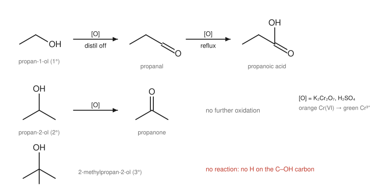
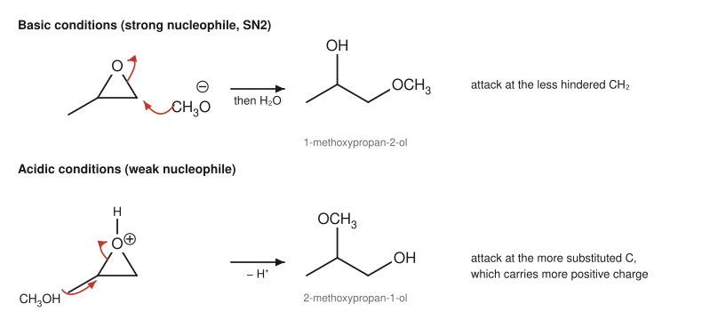

Chapter 10: Alcohols, Ethers and Epoxides¶
Compounds with C–O single bonds
Alcohols are everywhere: ethanol in drinks and fuels, glycerol in fats, cholesterol in cell membranes, the many OH groups of sugars. They are also among the most useful compounds in the laboratory, because the OH group can be turned into almost any other functional group. Ethers, in which oxygen joins two carbon groups, are much less reactive and are valued as solvents. Epoxides are ethers in a strained three-membered ring, and that strain makes them reactive in ways ordinary ethers are not. This chapter covers the properties, preparation and reactions of all three, building on the substitution and elimination mechanisms of Chapter 9.
Learning outcomes
By the end of this chapter you should be able to:
- explain the physical properties of alcohols and ethers in terms of hydrogen bonding;
- describe the acidity and basicity of alcohols and the formation of alkoxides;
- list the main ways of making alcohols;
- convert alcohols into haloalkanes and sulfonate esters, choosing suitable reagents;
- write the mechanism of acid-catalysed dehydration and predict its products;
- predict the products of oxidising primary, secondary and tertiary alcohols;
- make ethers by the Williamson synthesis and describe their cleavage by HI or HBr;
- prepare epoxides and predict the regiochemistry and stereochemistry of their ring opening under basic and acidic conditions.
10.1 Alcohols: structure and properties¶
An alcohol has an OH group bonded to an sp³ carbon. The oxygen is sp³ hybridised, with two lone pairs, and the C–O–H angle is close to the tetrahedral angle (about 109° in methanol). Alcohols are classified as primary, secondary or tertiary by the carbon carrying the OH (Section 2.1). An OH group on a benzene ring makes a phenol, which behaves differently (Section 4.4 and below).
The O–H group dominates the physical properties:
- Hydrogen bonding between molecules gives alcohols much higher boiling points than alkanes, ethers or haloalkanes of similar molar mass. Ethanol (46 g mol⁻¹) boils at 78 °C, propane (44 g mol⁻¹) at −42 °C.
- Solubility in water: alcohols hydrogen bond to water. Methanol, ethanol and propanol mix with water completely; solubility falls as the hydrocarbon chain lengthens. Each OH group can carry roughly three or four carbons into solution, so diols and triols such as glycerol are very soluble.
Acidity and basicity¶
Alcohols are weak acids (pKa about 15.5 for methanol, 16 for ethanol, 18 for 2-methylpropan-2-ol), similar to water. Alkyl groups make the conjugate base less stable, and bulky alkoxides are poorly solvated, so acidity falls from methanol to tertiary alcohols. Alcohols react with sodium metal, giving hydrogen gas and a sodium alkoxide:
The reaction is gentler than that of sodium with water, and the fizzing is a simple test for an OH group (in a dry, neutral compound). Alkoxides are strong bases and good nucleophiles, used throughout this chapter. Sodium hydride, NaH, is a convenient alternative way to deprotonate an alcohol.
Alcohols are also weak bases. Their oxygen lone pairs accept a proton from strong acids, giving an oxonium ion, R–OH₂⁺. Protonation is the key that unlocks most alcohol reactions, because it turns the very poor leaving group HO⁻ into the good leaving group H₂O.
Phenols (pKa about 10) are about a million times more acidic than alcohols, because the phenoxide ion is stabilised by resonance with the ring (Figure 4.3). Phenols dissolve in aqueous sodium hydroxide, whereas simple alcohols do not ionise appreciably in it.
10.2 Making alcohols¶
Alcohols are made by several routes, most of which are described elsewhere in the book:
| Method | Example | Chapter |
|---|---|---|
| Acid-catalysed hydration of an alkene (Markovnikov) | propene → propan-2-ol | 7 |
| Hydroboration–oxidation of an alkene (anti-Markovnikov) | propene → propan-1-ol | 7 |
| SN2 substitution of a haloalkane by hydroxide | 1-bromobutane → butan-1-ol | 9 |
| Reduction of an aldehyde or ketone (NaBH₄ or LiAlH₄) | propanone → propan-2-ol | 11 |
| Reduction of a carboxylic acid or ester (LiAlH₄) | ethyl ethanoate → ethanol | 12 |
| Addition of a Grignard reagent to a carbonyl compound | methanal + CH₃MgBr → ethanol | 11 |
| Fermentation of sugars by yeast | glucose → ethanol + CO₂ | — |
Table 10.1. Methods of making alcohols.
Fermentation is the oldest of these and still produces most of the world's ethanol for drinks and fuel. Yeast enzymes convert glucose into ethanol and carbon dioxide in the absence of air: C₆H₁₂O₆ → 2 C₂H₅OH + 2 CO₂.
10.3 Converting alcohols into haloalkanes and sulfonates¶
The OH group cannot leave as HO⁻, so it must be activated first.
With hydrogen halides. Concentrated HCl, HBr or HI protonate the OH, and water then leaves.
- Tertiary alcohols react fast, even with HCl at room temperature, by an SN1 mechanism: the protonated alcohol loses water to give a tertiary carbocation, which is captured by halide.
- Primary alcohols react by SN2: halide attacks the carbon of the protonated alcohol, displacing water. HBr and HI work well; HCl needs a zinc chloride catalyst.
- Secondary alcohols are in between and may rearrange.
The rate difference is the basis of the Lucas test: with a solution of zinc chloride in concentrated hydrochloric acid, a tertiary alcohol gives an immediate cloudiness (the insoluble chloroalkane), a secondary alcohol does so within minutes, and a primary alcohol hardly at all at room temperature.
With thionyl chloride or phosphorus tribromide. For primary and secondary alcohols, SOCl₂ (giving chloroalkanes, with SO₂ and HCl as gaseous by-products) and PBr₃ (giving bromoalkanes) are cleaner. Both first convert the OH into a good leaving group bonded to sulfur or phosphorus, which is then displaced by halide in an SN2 step, avoiding carbocations and rearrangements.
Sulfonate esters. An alcohol reacts with 4-methylbenzenesulfonyl chloride (tosyl chloride, TsCl) in pyridine to give a tosylate, R–OTs. The C–O bond of the alcohol is not broken in this step, so the configuration of the carbon is unchanged. The tosylate ion is a very weak base (the conjugate base of a strong acid), so it is an excellent leaving group, as good as or better than bromide. Tosylates undergo SN2 and E2 reactions just like haloalkanes, which gives a two-step way to substitute an alcohol with full control of stereochemistry: tosylation (retention), then SN2 (inversion).
Caution: water is a leaving group only after protonation
Never draw HO⁻ leaving from an alcohol in neutral or basic solution. In acid, draw protonation first, then loss of H₂O. In the laboratory, alcohols are made reactive by acid, by conversion into a halide, or by conversion into a sulfonate.
10.4 Dehydration to alkenes¶
Heating an alcohol with concentrated sulfuric acid or phosphoric acid removes a molecule of water and forms an alkene. Cyclohexanol, warmed with concentrated phosphoric acid, gives cyclohexene, which distils out of the mixture as it forms; this is a common teaching practical.
For secondary and tertiary alcohols the mechanism is E1:
- The OH is protonated.
- Water leaves, giving a carbocation (rate-determining).
- A base (water, or HSO₄⁻) removes a proton from a neighbouring carbon, forming the C=C bond and regenerating the acid catalyst.
Because the reaction goes through a carbocation, the ease of dehydration is tertiary > secondary > primary, the more substituted alkene predominates (Zaitsev's rule), and rearrangements can occur. Butan-2-ol gives mainly but-2-ene. Primary alcohols dehydrate only under harsher conditions, by an E2-like pathway from the protonated alcohol.
Dehydration is the reverse of acid-catalysed hydration (Section 7.3). The position of the equilibrium is controlled by the conditions: concentrated acid and heat, with removal of the alkene by distillation, favour dehydration; dilute aqueous acid favours hydration.
Example 10.1: Predicting dehydration products
Predict the main product of heating 2-methylbutan-2-ol with concentrated H₂SO₄.
Protonation and loss of water give the tertiary cation (CH₃)₂C⁺CH₂CH₃. Loss of a proton from the CH₂ gives the trisubstituted alkene 2-methylbut-2-ene; loss from a CH₃ gives the disubstituted 2-methylbut-1-ene. By Zaitsev's rule the main product is 2-methylbut-2-ene.
10.5 Oxidation of alcohols¶
Oxidation of an alcohol removes the hydrogen from the O–H and a hydrogen from the carbon carrying the OH, forming a C=O bond. Whether a reaction is possible depends on whether that carbon has a hydrogen.
- A primary alcohol (two H on the carbinol carbon) is oxidised first to an aldehyde, and the aldehyde, which is easily oxidised itself, can go on to a carboxylic acid.
- A secondary alcohol (one H) is oxidised to a ketone, which resists further oxidation.
- A tertiary alcohol (no H) is not oxidised under these conditions.

The classic oxidising agent in teaching laboratories is acidified potassium dichromate(VI), K₂Cr₂O₇ with dilute H₂SO₄. As it oxidises the alcohol, the orange Cr₂O₇²⁻ ion is reduced to green Cr³⁺. The colour change distinguishes primary and secondary alcohols (which turn the solution green) from tertiary alcohols (which do not). To stop at the aldehyde, the primary alcohol is added to the oxidant and the aldehyde, which boils lower than the alcohol because it cannot hydrogen bond to itself, is distilled off as soon as it forms. To get the carboxylic acid, the mixture is heated under reflux with excess oxidant.
Milder, anhydrous reagents stop the oxidation of primary alcohols cleanly at the aldehyde. Pyridinium chlorochromate (PCC) in dichloromethane is a traditional choice, and chromium-free methods are now preferred where possible.
Caution: chromium(VI)
Chromium(VI) compounds are toxic and carcinogenic and must be handled with gloves, in small amounts, and disposed of as hazardous waste. In modern practice they are being replaced by less hazardous oxidants, including catalytic methods that use air or hydrogen peroxide (Chapter 16).
In living cells, the oxidation of ethanol to ethanal and then to ethanoic acid is carried out by enzymes (alcohol dehydrogenase and aldehyde dehydrogenase) using the coenzyme NAD⁺ as the oxidant.
10.6 Ethers¶
An ether has an oxygen bonded to two carbon groups, R–O–R′. The C–O–C angle is about 110°. Ethers cannot hydrogen bond to one another, so their boiling points are close to those of alkanes of similar mass (methoxymethane −24 °C). They can, however, accept hydrogen bonds from water, so small ethers are somewhat soluble in water.
Ethers are unreactive towards bases, nucleophiles, dilute acids and most oxidising and reducing agents, which makes them excellent solvents. Ethoxyethane (diethyl ether) and the cyclic ether tetrahydrofuran (oxolane, THF) are used for Grignard reactions (Chapter 11), because their lone pairs coordinate to and stabilise the magnesium.
Caution: ether hazards
Ethoxyethane is extremely flammable, with a very low flash point, and its vapour is denser than air and can travel to a distant flame. On standing in air and light, ethers slowly form explosive peroxides. Containers are dated when opened, tested for peroxides before use, never distilled to dryness, and kept away from all ignition sources.
Making ethers: the Williamson synthesis¶
The most general method is the Williamson ether synthesis: an alkoxide ion reacts with a primary haloalkane (or tosylate) by SN2.
Because it is an SN2 reaction, the haloalkane must be methyl or primary. A tertiary haloalkane with an alkoxide gives elimination instead. So to make an unsymmetrical ether, choose the combination in which the halide carries the less hindered group.
Example 10.2: Planning a Williamson synthesis
How would you make 2-methoxy-2-methylpropane, CH₃–O–C(CH₃)₃ (methyl tert-butyl ether)?
Two disconnections are possible: (a) CH₃O⁻ + (CH₃)₃CBr; (b) (CH₃)₃CO⁻ + CH₃I. Route (a) fails: methoxide with a tertiary bromide gives elimination (2-methylpropene). Route (b) works: the halide is methyl, ideal for SN2, and the bulky alkoxide is the nucleophile. Use potassium tert-butoxide and iodomethane.
Symmetrical ethers from primary alcohols can also be made by heating the alcohol with concentrated sulfuric acid at a temperature lower than that used for dehydration: one protonated alcohol molecule is attacked by another in an SN2 step. At higher temperatures elimination to the alkene takes over.
Cleaving ethers¶
Ethers are cleaved by heating with concentrated HI or HBr. The oxygen is protonated, and the halide then attacks one of the carbons: by SN2 at a methyl or primary carbon, or by SN1 if one group is tertiary. Methoxyethane with excess HI gives iodomethane and iodoethane (the alcohol formed first is converted into a second iodoalkane).
Crown ethers, large cyclic polyethers such as 18-crown-6, have their oxygens pointing into a central cavity that binds a metal cation of the right size (K⁺ for 18-crown-6). They can carry salts such as KMnO₄ or KF into non-polar solvents.
10.7 Epoxides¶
An epoxide (oxirane) is a cyclic ether with a three-membered ring. Like cyclopropane, it has substantial ring strain (about 110 kJ mol⁻¹), and opening the ring releases it. Epoxides therefore react with nucleophiles under conditions where ordinary ethers do not.
Making epoxides¶
- From alkenes and peroxyacids (Section 7.6): a stereospecific syn addition of oxygen. cis-But-2-ene gives cis-2,3-dimethyloxirane.
- From halohydrins: treating a bromohydrin with base deprotonates the OH, and the alkoxide displaces the neighbouring bromide by an intramolecular SN2 reaction, closing the ring. The O⁻ and Br must be anti-periplanar for this backside attack.
- Industrially, oxirane (ethylene oxide) is made by oxidising ethene with oxygen over a silver catalyst.
Ring opening¶
Epoxides are opened by nucleophiles under both basic and acidic conditions, but the two give different regiochemistry.
Basic or neutral conditions (strong nucleophile). A strong nucleophile, such as HO⁻, RO⁻, CN⁻, an amine, or a Grignard reagent, attacks the epoxide directly by an SN2 mechanism. It attacks the less hindered carbon, from the side opposite the oxygen, with inversion at that carbon. The ring oxygen becomes an alkoxide, which is protonated in a final step.
Acidic conditions (weak nucleophile). The epoxide oxygen is first protonated, which makes it a much better leaving group. The C–O bonds weaken, and positive charge builds up on the carbons, especially the more substituted one, which can stabilise it better. A weak nucleophile such as water or an alcohol then attacks the more substituted carbon, still from the back face, so the addition is anti. The mechanism lies between SN1 and SN2: it has SN1-like regiochemistry and SN2-like stereochemistry.

Acid-catalysed hydrolysis of an epoxide gives a 1,2-diol with the two OH groups anti. Epoxidation of cyclohexene followed by aqueous acid gives trans-cyclohexane-1,2-diol, a useful complement to the cis diol from OsO₄ (Section 7.6).
Key idea
Strong nucleophile, basic conditions: attack at the less substituted carbon (steric control, SN2). Weak nucleophile, acid catalyst: attack at the more substituted carbon (electronic control, carbocation-like). In both cases the nucleophile enters from the face opposite the oxygen, so the stereochemistry is anti.
Epoxides are widely used. Oxirane is converted into ethane-1,2-diol (antifreeze and a monomer for polyester, Chapter 15), and epoxy resins, used as strong adhesives and coatings, are polymers formed by ring-opening reactions of epoxides with amines.
10.8 Summary¶
Summary
- Hydrogen bonding gives alcohols high boiling points and water solubility; ethers cannot hydrogen bond to themselves.
- Alcohols are weak acids (pKa 15.5 to 18) and react with Na or NaH to give alkoxides; they are also weak bases, and protonation turns OH into a good leaving group.
- Alcohols become haloalkanes with HX (3° by SN1, 1° by SN2), SOCl₂ or PBr₃, and tosylates with TsCl (retention).
- Acid-catalysed dehydration (E1 for 2° and 3°) gives the more substituted alkene, with possible rearrangement.
- Oxidation: 1° → aldehyde → carboxylic acid; 2° → ketone; 3° → no reaction. Dichromate turns from orange to green.
- Williamson synthesis: alkoxide + methyl or primary halide (SN2). Ethers are cleaved by HI or HBr.
- Epoxides are strained. Strong nucleophiles open them at the less substituted carbon; acid-catalysed opening occurs at the more substituted carbon; both give anti products.
10.9 Exercises¶
Exercise 1
Arrange in order of increasing boiling point and explain: butan-1-ol, ethoxyethane, pentane, butane-1,4-diol. (All have molar masses between 72 and 90 g mol⁻¹.)
Answer
Ethoxyethane (35 °C) ≈ pentane (36 °C) < butan-1-ol (118 °C) < butane-1,4-diol (about 230 °C). Pentane has only dispersion forces; ethoxyethane is polar but cannot hydrogen bond to itself; butan-1-ol forms hydrogen bonds through one OH group; the diol forms hydrogen bonds through two.
Exercise 2
Give reagents to convert butan-1-ol into: (a) 1-bromobutane; (b) 1-chlorobutane; (c) butanal; (d) butanoic acid; (e) but-1-ene (as the main product, avoiding rearrangement).
Answer
(a) PBr₃ (or concentrated HBr). (b) SOCl₂. (c) PCC in dichloromethane, or acidified dichromate with the aldehyde distilled off as it forms. (d) Excess acidified potassium dichromate, heated under reflux. (e) Direct acid dehydration of a primary alcohol is slow and can give rearranged but-2-ene; a cleaner route is to make the tosylate (TsCl, pyridine) or 1-bromobutane and eliminate with a bulky base such as potassium tert-butoxide (E2), which gives but-1-ene.
Exercise 3
Write the mechanism of the acid-catalysed dehydration of cyclohexanol to cyclohexene. Why is the alkene distilled out of the reaction mixture as it forms?
Answer
(1) The OH oxygen is protonated by the acid, giving an oxonium ion. (2) Water leaves, giving the secondary cyclohexyl carbocation (rate-determining). (3) Water or the conjugate base of the acid removes a proton from a neighbouring carbon; the C–H electrons form the C=C π bond, giving cyclohexene and regenerating the acid. Dehydration is reversible (the reverse is hydration). Cyclohexene (bp 83 °C) boils lower than cyclohexanol (bp 161 °C), so distilling it out as it forms shifts the equilibrium towards the products (Le Chatelier's principle).
Exercise 4
Three unlabelled bottles contain butan-1-ol, butan-2-ol and 2-methylpropan-2-ol. Describe chemical tests that would identify each.
Answer
Warm a few drops of each with acidified potassium dichromate. The tertiary alcohol (2-methylpropan-2-ol) does not react: the solution stays orange. The other two turn the solution green. To tell these apart, use the Lucas reagent (ZnCl₂ in concentrated HCl) at room temperature: the secondary alcohol, butan-2-ol, turns cloudy within a few minutes, while the primary alcohol, butan-1-ol, stays clear. (Alternatively, collect the oxidation products: butan-1-ol gives an aldehyde, which gives a silver mirror with Tollens' reagent; butan-2-ol gives a ketone, which does not; Chapter 11.)
Exercise 5
Which combination of reagents would you use to make each ether by the Williamson synthesis? (a) 1-ethoxypropane; (b) tert-butyl phenyl ether, C₆H₅–O–C(CH₃)₃, explaining any difficulty; (c) methoxycyclohexane.
Answer
(a) Sodium ethoxide + 1-bromopropane, or sodium propoxide + bromoethane: both halides are primary, so either works.
(b) This ether cannot be made by the Williamson method. Phenoxide + 2-bromo-2-methylpropane gives elimination (2-methylpropene), because the halide is tertiary. The other combination, tert-butoxide + bromobenzene, fails because SN2 does not occur at an sp² carbon of a benzene ring. A different method (for example, acid-catalysed addition of phenol to 2-methylpropene) is needed.
(c) Sodium cyclohexoxide (from cyclohexanol + NaH) + iodomethane. The reverse, methoxide + bromocyclohexane, would give a lot of cyclohexene by E2, because the halide is secondary.
Exercise 6
Give the main product of 2,2-dimethyloxirane, (CH₃)₂C–CH₂ joined through O, with (a) sodium methoxide in methanol; (b) methanol with a trace of sulfuric acid.
Answer
(a) Methoxide attacks the less hindered CH₂ carbon by SN2: after protonation, 1-methoxy-2-methylpropan-2-ol, (CH₃)₂C(OH)CH₂OCH₃.
(b) After protonation of the epoxide oxygen, methanol attacks the more substituted (tertiary) carbon, which bears more positive charge: 2-methoxy-2-methylpropan-1-ol, (CH₃)₂C(OCH₃)CH₂OH.
Exercise 7
Describe two ways to make cyclohexane-1,2-diol from cyclohexene, one giving the cis isomer and one giving the trans isomer.
Answer
cis-Diol: syn dihydroxylation with OsO₄ (catalytic, with a co-oxidant) or cold, dilute, alkaline KMnO₄. trans-Diol: epoxidation with a peroxyacid, followed by acid-catalysed ring opening with water; water attacks from the face opposite the epoxide oxygen, giving anti addition (as a racemic mixture of the two trans enantiomers).
10.10 Quiz¶
Check your understanding of alcohols, ethers and epoxides
Exercise 1
Which alcohol is NOT oxidised by acidified potassium dichromate?
- ethanol
- propan-2-ol
- butan-1-ol
- 2-methylpropan-2-ol
Answer
2-methylpropan-2-ol
Exercise 2
Propan-2-ol is oxidised to
- propanal
- propanone
- propanoic acid
- propene
Answer
propanone
Exercise 3
Before the OH of an alcohol can leave in a substitution, it is usually
- deprotonated
- protonated or converted into a sulfonate
- oxidised
- reduced
Answer
protonated or converted into a sulfonate
Exercise 4
Acid-catalysed dehydration of butan-2-ol gives mainly
- but-1-ene
- but-2-ene
- butane
- butanone
Answer
but-2-ene
Exercise 5
In the Williamson ether synthesis, the haloalkane should preferably be
- tertiary
- secondary
- primary or methyl
- aromatic
Answer
primary or methyl
Exercise 6
Under basic conditions, methoxide opens 2-methyloxirane at
- the more substituted carbon
- the less substituted carbon
- the oxygen
- both carbons equally
Answer
the less substituted carbon
Exercise 7
What colour does acidified dichromate turn when it oxidises a primary alcohol?
Answer
green